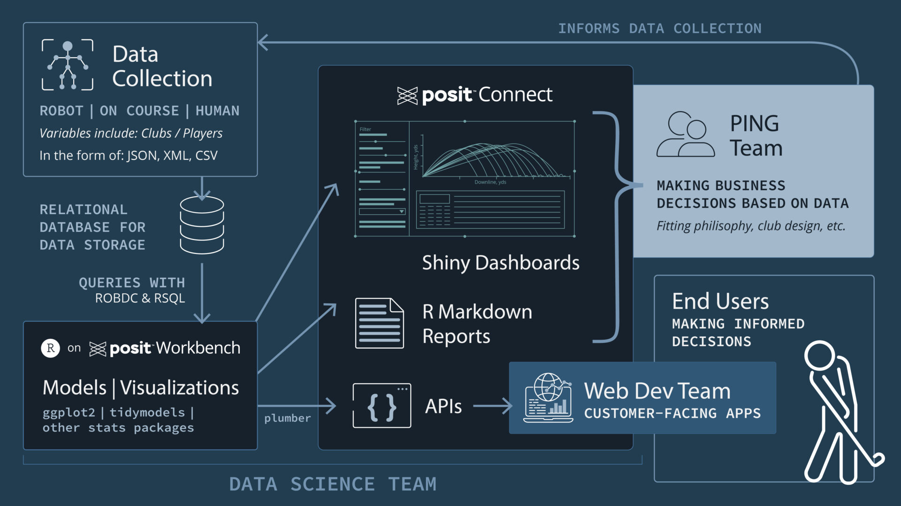
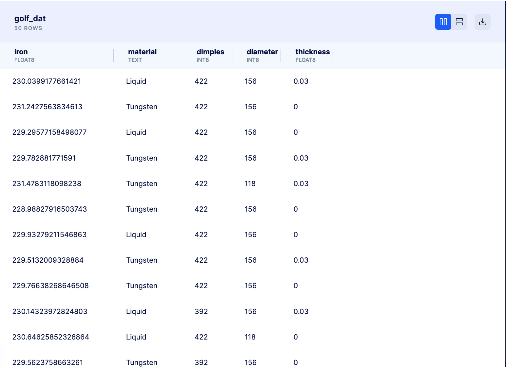
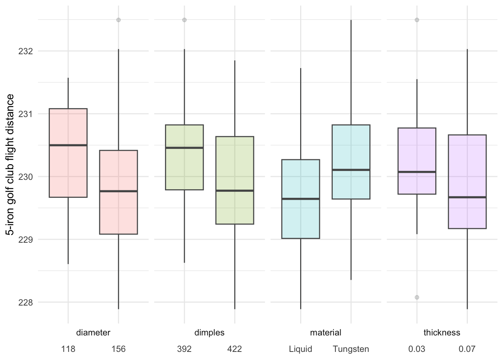

Using R in Production with Posit Connect: Deploying Models as APIs for Customer-Facing Applications
2023-05-31
Businesses continually seek ways to use their data to inform decision-making and enhance customer experiences. One powerful approach is the integration of prescriptive analytics models into customer-facing applications. By equipping customers with real-time recommendations, businesses empower them to make optimal product choices, leading to increased satisfaction and loyalty.
PING, a prominent sports equipment manufacturing company, delivers custom, data-driven experiences through their cutting-edge tool, Ballnamic. They use advanced technology like robot capture, human capture, and on-course data to develop models to optimize, predict, and provide insights. These models power Ballnamic’s backend. Existing or prospective customers can use the tool to receive personalized product suggestions that improve their golf performance.
To promote data-driven decision-making within the company, the data science team relies on the versatile capabilities of Shiny apps. Data scientists use Shiny apps to build interactive web apps and dashboards. Shiny also excels as a prototyping tool by enabling rapid iteration of models. Once the data scientists finish their analyses, they publish the apps on Posit Connect, allowing colleagues from different departments to conveniently access and review the results. This collaborative approach enables teams outside of data science to use data to inform fitting philosophy, club design, and other critical business decisions.
However, once PING decided to offer a public-facing web service, the data scientists had to consider new project requirements. Their existing process for cleaning, modeling, visualizing, and reporting data using R worked well for internal projects. But now, they needed to adjust their workflow to create models that could effectively support a revenue-generating tool on a website that didn’t use R.
A significant challenge arises when data scientists need to share timely and dependable model results with a web development team. Web developers may not be familiar with R. Although they can review model results in a Shiny app, they need a streamlined process for extracting those results. Furthermore, the outputs must be in a compatible format that can easily integrate with a website’s user interface.
A manual process, such as handing off CSVs, is painful, risky, and time-consuming. Whenever updates are needed, data scientists have to go through the repetitive cycle of downloading the CSV, sharing it, and notifying their colleagues about the new file. It’s easy to make mistakes during this process, as it’s challenging to keep track of the most up-to-date version. Data scientists must ensure the website is promptly updated to reflect any changes in the data or the model. To deliver models ready for “prime time”, the data science team must carefully consider all these details.
PING found their solution by leveraging their Posit Connect server to host Application Programming Interfaces (APIs) as well as Shiny apps. An API is a flexible and interoperable tool that is widely used to pull information into websites. Using the plumber package, data scientists using R can create a web API by annotating their existing R source code with special comments. This approach enables them to use their preferred language to share model results in a format that works with websites.
After a data scientist creates an API using the plumber package in R, Posit Connect serves as a hosting platform for the API in a production environment. Connect seamlessly integrates with the rest of the data science workflow; data scientists can publish to Connect directly in RStudio. Connect’s platform also allows for authentication, granting access to specific users. Publishers have the flexibility to adjust run-time configurations based on usage and traffic, ensuring that the model remains operational and responsive. Furthermore, Connect simplifies the distribution of outputs to intended users. For PING, sharing an API between teams is as simple as sharing a URL.
Thanks to plumber and Posit products, PING’s data science team has the necessary tools to use R in production. They are able to deliver accurate, streamlined, and automated model results.
By implementing this workflow, PING effectively closed the divide between their data science team and end-users. Customers are equipped to make informed decisions through the app, leading to improved product choices and an enhanced golfing experience. We invite you to delve deeper into PING’s remarkable data transformation journey by visiting our page, “A Game of Numbers: Democratizing golf through data insights”.

Successfully integrating prescriptive analytics into customer-facing apps is a valuable advantage when it comes to gaining a competitive edge. Data scientists can achieve this by adopting a streamlined workflow that combines R and Posit products. These robust tools enable teams to collaborate across departments, enabling the company to provide customers with personalized experiences driven by data.
In this blog post, we will provide a simplified example to guide you through the step-by-step process of creating an API in RStudio and explore the steps involved in deploying and sharing it on Posit Connect. The code for this post can be found on GitHub.
Identify Data Sources
Suitable data sources play a crucial role in determining modeling approaches. These sources can range from databases and APIs to external datasets or even manually entered data. At PING, their data scientists have access to a diverse range of valuable information, including human/robot capture and on-course data. These data sets come in different formats, such as JSON, XML, and CSVs.
Relational databases are commonly used for storing frequently updated data, especially when dealing with various file types. They offer a convenient way to link important information, such as golf club types or player data, with the stored variables.
Let’s consider an example where we want to develop an application that assists users in selecting golf balls that maximize ball flight distance. For this walkthrough, we have dummy data stored in a PostgreSQL database on bit.io:

The database contains the following variables:
Column
Description
Material
The golf ball core material: Liquid or Tungsten
Diameter
The golf ball core diameter: 118 or 156
Dimples
The number of dimples: 392 or 422
Thickness
The golf ball cover thickness: 0.03 or 0.06
Iron
The golf ball flight distance for 5-iron golf club
Now that we have our data in a database, we can access it with R in RStudio.
Extract-transform-load (ETL) into RStudio on Posit Workbench
RStudio provides several options to connect to shared resources such as databases or mounted file systems. For Posit Workbench customers, we offer Posit Professional ODBC Drivers, which provide connections to some of the most popular databases and use them in a production environment.
R packages such as DBI, dbplyr, and odbc allow us to query databases with R. Let’s use the DBI package to connect to our database:
# Install these packages if you have not already# install.packages(c('DBI', 'RPostgres', 'tidyverse', 'tidymodels', 'plumber'))library(dplyr)conflicted::conflict_prefer("select", "dplyr")con <- DBI::dbConnect( RPostgres::Postgres(),dbname ='ivelasq3/elements',host ='db.bit.io',port =5432,user ='ivelasq3_demo_db_connection',password =Sys.getenv('BITIO_KEY') # insert your password here)
Now, let’s use the dbplyr package. The dbplyr package allows you to query databases with dplyr syntax, so you do not have to switch between R and SQL to explore the data. However, we’ll be working solely in R for this walkthrough. We can use the collect() function to download our data into a tibble.
We have accessed our golf ball data directly from our database in RStudio. To ensure that this data remains up-to-date, we can schedule an R Markdown or Quarto document in Posit Connect. Scheduling allows the document to run regularly and consistently. As new or updated data enters the database, the document can execute the necessary code to retrieve and save the dataset. It can also rerun our model with the new data, ensuring the results are always based on the latest available data.
Tidy and visualize with the tidyverse
Once we have our data in R, the next step is to clean and wrangle it. It’s important to note that the variables diameter, dimples, and thickness are currently stored as quantitative values. However, they represent dichotomous variables with two distinct categories. To ensure accuracy during the modeling phase, we need to convert these variables into factor variables. We can achieve this with the mutate() function from the dplyr package, which allows us to modify these specific columns accordingly.
Next, we need to tidy the data, which structures it in a way that works well with ggplot2. The pivot_longer() function from the tidyr package can help us rearrange the data into the right format.
It’s critical to visualize the data and review the output at the onset of a data science project. This helps us identify any patterns or trends that immediately jump out to us. We can keep our observations in mind during the modeling phase.
library(ggplot2)golf_dat_long |>ggplot(aes(x = iron, y = value, fill = name)) +geom_boxplot(alpha =0.2,color ="#555656") +theme_minimal() +facet_grid(cols =vars(name),scales ="free",switch ="both") +xlab("5-iron golf club flight distance") +theme(axis.title.x =element_blank(),legend.position ="none") +coord_flip()

Model with tidymodels
Now, let’s move on to modeling. We will use the tidymodels framework, a collection of packages for modeling and machine learning using tidyverse principles.
library(tidymodels)
Create a train-test split
Tidymodels has convenient functions for creating train-test splits.
Now, we can use the recipes package to preprocess the data so that it can be used for modeling.
The recipe() function defines a sequence of steps to preprocess the data. We specify the outcome variable (iron) and the predictor variables (., which stands for all other variables).
The step_dummy() function creates dummy variables for the predictor variables. Dummy variables are binary variables that are used to represent categorical variables in a regression model.
golf_rec <-recipe(iron ~ ., data = golf_train) |>step_dummy(all_factor_predictors())
Specify the model
Next, we specify the linear regression model we want to use for our analysis. Given that we have qualitative predictors (categorical variables) and a quantitative outcome (continuous variable), a linear regression model is appropriate.
We can use the extract_fit_parsnip() function to extract various information and attributes from a fitted model object. By using the tidy() function, we can easily see our output to assess the significance of each predictor value.
We can also check the metrics, such as root mean square error (RMSE).
rmse(golf_results, truth = iron, estimate = .pred)
# A tibble: 1 × 3
.metric .estimator .estimate
<chr> <chr> <dbl>
1 rmse standard 0.870
The estimation of RMSE for this model is 0.87. Generally, an RMSE closer to 0 indicates better model performance. However, despite the current RMSE, we will proceed with our chosen model.
If we want to input our own values and observe the predictions made by our model, we can use the predict() function. We provide the function with a tibble containing our desired input values to obtain the corresponding results. This allows us to explore and analyze the model’s performance on specific inputs of interest.
Suppose we want to provide a user-friendly interface for anyone to input values for material, diameter, dimples, and thickness to predict the distance of a golf ball. In this case, we need an accessible solution that goes beyond RStudio. This is where an API becomes valuable.
By creating an API, we can make our model accessible to a wider audience by integrating it with other tools. Users can input their desired variables using the API, allowing them to receive predictions tailored to their specific inputs.
Turn our model into an API with plumber
We can use the plumber package to convert our model into an API that can be accessed outside of R. As mentioned earlier, the process involves adding special comments with #* to our R code to transform it into an API. For instance, a plumber.R file might have the following structure:
library(plumber)library(tidyverse)library(tidymodels)# For brevity, I am reading a CSV here rather than pulling from the database.golf_dat <- readr::read_csv("~/R/ping-story/data/processed/golf_dat.csv")golf_dat_factor <- golf_dat |> dplyr::mutate(across(material:thickness, ~as.factor(.x)))set.seed(1234)golf_split <-initial_split(golf_dat_factor)golf_train <-training(golf_split)golf_test <-testing(golf_split)golf_rec <-recipe(iron ~ ., data = golf_train) |>step_dummy(all_factor_predictors()) |>prep(training = golf_train)#* @apiTitle 5-iron golf club flight distance prediction#* Predict the distance of a ball based on its characteristics#* @param material material of the ball#* @param dimples number of dimples#* @param diameter diameter of the ball#* @param thickness thickness of the ball#* @get /ironfunction(material, dimples, diameter, thickness) { new_dat <-tibble(material, dimples, diameter, thickness) golf_linear <-linear_reg() golf_wflow <-workflow() |>add_model(golf_linear) |>add_recipe(golf_rec) golf_fit <- golf_wflow |>fit(data = golf_train) iron <-predict(golf_fit, new_dat)$.pred}
Now we can run (or “plumb”) the API:
pr("api/plumber.R") |>pr_run(port =8000)
When we run the API with pr(), it opens an interactive user interface that allows us to explore and inspect the available endpoints. The interface gives us the opportunity to input various values and observe the corresponding predicted outcomes.
By trying out different values, we can experiment with different inputs to assess the model’s performance and gain insights into the predictions for different scenarios.
We have successfully created our API! Now, the next question is: How can we share it with others or use it in other applications?
Host APIs on Posit Connect
Posit Connect is a commercial publishing platform that enables R developers to easily publish various R content types, including Plumber APIs. Posit Connect automatically manages an API’s dependent packages and files and recreates an environment closely mimicking the local development environment on the server.
We can publish an API to Connect directly from RStudio:
Once we have created our API, we can share it with others or integrate it into other applications or websites.
We can provide the URL of our API to others, allowing them to directly access and interact with it. You can access this walkthrough’s API on our demo server: https://colorado.posit.co/rsc/golf-plumber-api/
The plumber package automatically creates comprehensive documentation that explains the available endpoints, input parameters, and expected responses. We can provide this documentation to guide others on how to use the API.
Our API can be integrated into other applications or systems by incorporating the API endpoints and making HTTP requests to retrieve predictions or send data.
By leveraging R and Posit products in an end-to-end workflow, we have successfully transformed our model into an accessible tool that can be used outside of R. A broader audience can benefit from our model’s insights and use the information to inform decision-making.
One thing to note is that our model is predictive. Prescriptive models, on the other hand, go beyond predicting future outcomes. These models consider factors like limitations, preferences, and optimization criteria to provide practical insights and offer suggestions for achieving a specific outcome.
With Ballnamic, the PING team takes employ different techniques to optimize suggestions based on predefined objectives. By adding context and expertise to their models, PING enhances the decision-making process and helps users make informed choices with concrete recommendations.
Put R in production with Posit
When data scientists combine R with the Posit platform, they can do amazing things. The seamless integration of R and Posit empowers data scientists to bring their models to the forefront, making them accessible and actionable for a wider audience. Data scientists can confidently deliver their R-based solutions, helping their organization make data-driven decisions and improve customer experiences.
We are excited to be a part of your R in production journey. Our sales team is dedicated to providing you with the information and support you need to make the most of your data workflow. Schedule a time to chat here.
Enhance your R skills
You can explore several workshops at posit::conf(2023) directly related to the topics discussed in this post. These workshops provide valuable insights and hands-on experiences to help you dive deeper into the integration of R with Posit products, deploying models, and sharing results. For more details on the workshops available at posit::conf(2023), visit this blog post.